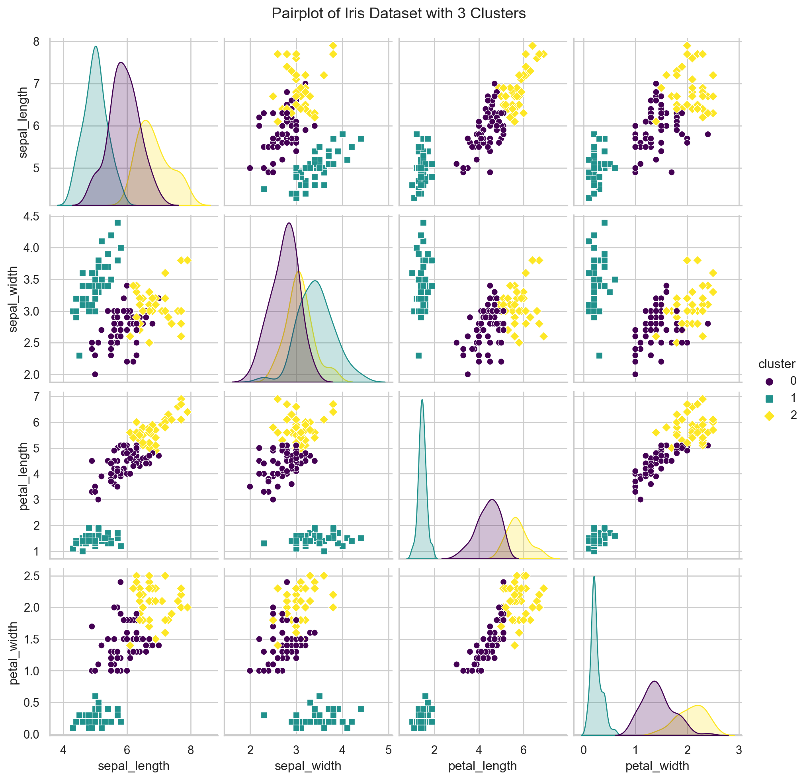

Clustering is a technique in machine learning and data analysis that involves grouping similar data points together based on certain criteria. The goal of clustering is to identify inherent structures within a dataset and organize data into groups, or clusters, such that points within the same cluster are more similar to each other than they are to points in other clusters.
Key characteristics of Clustering:
Unsupervised Learning:
Clustering is often considered an unsupervised learning task because the algorithm works without labeled target values. The goal is to discover patterns or structures in the data without explicit guidance on what those patterns might be.
Similarity Measures:
Clustering relies on similarity or dissimilarity measures to determine how close or far apart data points are from each other. Common measures include Euclidean distance, Manhattan distance, or other distance metrics depending on the type of data and the clustering algorithm used.
Cluster Centroids:
Clusters are often represented by a central point, known as the centroid. The centroid can be the mean, median, or another representative point for the data in the cluster.
Types of Clustering:
There are various types of clustering algorithms, and they can be broadly categorized into hierarchical clustering and partitional clustering. Partitional clustering methods, such as K-means, divide the data into non-overlapping clusters. Hierarchical clustering methods, such as agglomerative clustering, build a hierarchy of clusters.
Applications:
Clustering is used in a variety of fields, including data analysis, image segmentation, customer segmentation in marketing, anomaly detection, document categorization, and more. It is also used as a preprocessing step for other machine learning tasks.
Evaluation Metrics:
The effectiveness of clustering algorithms can be assessed using metrics such as silhouette score, Davies-Bouldin index, or other measures that evaluate the compactness and separation of clusters.
Popular clustering algorithms include:
K-means Clustering: Divides data into K clusters based on centroids.
Hierarchical Clustering: Builds a hierarchy of clusters by iteratively merging or splitting clusters.
DBSCAN (Density-Based Spatial Clustering of Applications with Noise): Identifies clusters based on density and can find clusters of irregular shapes.
Agglomerative Clustering: A hierarchical clustering approach that starts with individual data points as clusters and merges them until a stopping criterion is met.
Clustering is a powerful tool for exploring patterns and structures within data, facilitating better understanding and decision-making in various domains. The choice of a clustering algorithm depends on the nature of the data and the goals of the analysis.
Example
Let’s use the K-means clustering algorithm to cluster the Iris dataset based on its features and visualize the clusters. We’ll use the Seaborn and Matplotlib libraries for data visualization and the scikit-learn library for the K-means clustering algorithm.
import seaborn as snsimport matplotlib.pyplot as pltfrom sklearn.cluster import KMeansfrom sklearn import datasets# Load the Iris datasetiris = datasets.load_iris()X = iris.datafeature_names = iris.feature_names# Number of clusters (you can adjust this based on your needs)num_clusters =3# Apply K-means clusteringkmeans = KMeans(n_clusters=num_clusters, random_state=42)cluster_labels = kmeans.fit_predict(X)# Add cluster labels to the datasetiris_df = sns.load_dataset("iris")iris_df['cluster'] = cluster_labels# Set the style of the plotsns.set(style="whitegrid")# Create a pairplot with clusters colored differentlyplt.figure(figsize=(12, 8))sns.pairplot(iris_df, hue="cluster", palette="viridis", markers=["o", "s", "D"])# Set plot titleplt.suptitle(f'Pairplot of Iris Dataset with {num_clusters} Clusters', y=1.02)# Show the plotplt.show()
/Users/ronitbaishya/anaconda3/lib/python3.11/site-packages/sklearn/cluster/_kmeans.py:1412: FutureWarning:
The default value of `n_init` will change from 10 to 'auto' in 1.4. Set the value of `n_init` explicitly to suppress the warning
/Users/ronitbaishya/anaconda3/lib/python3.11/site-packages/seaborn/axisgrid.py:118: UserWarning:
The figure layout has changed to tight
<Figure size 1152x768 with 0 Axes>

In this example, we’re using a pairplot to visualize the relationships between different pairs of features in the Iris dataset. Each point in the scatter plots is color-coded based on the cluster assigned by the K-means algorithm. You can experiment with the number of clusters (num_clusters) to see how the data is partitioned. Adjust the markers parameter in the sns.pairplot function to use different markers for each cluster. The goal is to observe how well K-means separates the data into distinct clusters based on the chosen features.
Evaluating the performance of clustering algorithms can be a bit challenging, especially in the absence of ground truth labels. However, there are several metrics and techniques that can provide insights into the quality of the clustering results. Here are a few common methods:
Davies-Bouldin Index:
The Davies-Bouldin index measures the compactness and separation between clusters. Lower values indicate better clustering.
from sklearn.metrics import davies_bouldin_scoredb_index = davies_bouldin_score(X, cluster_labels)print(f"Davies-Bouldin Index: {db_index}")
Davies-Bouldin Index: 0.6619715465007465
It’s important to note that evaluation metrics depend on the characteristics of the data and the goals of clustering. In some cases, visual inspection and domain knowledge may be more informative than numerical metrics. Additionally, the choice of the number of clusters (num_clusters) can affect the results, and it may be worthwhile to experiment with different values. We also have to keep in mind that the Iris dataset used here has ground truth labels (flower species), but in a real-world scenario without such labels, evaluation becomes more challenging and subjective.